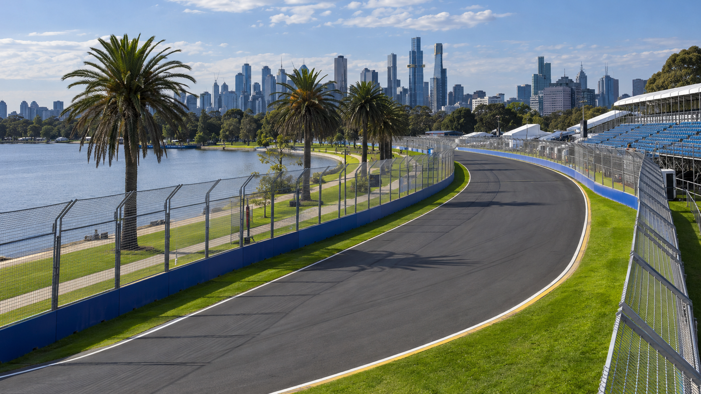

Temporada 2024 Austrália
GP da Austrália
Albert Park Circuit Melbourne, Austrália
Sobre o circuito

Albert Park Austrália
- Extensão do circuito
- 5,278 km
- Número de voltas
- 58
- Distância da corrida
- 306,124 km
- Primeira corrida
- 1996
O fim de semana
Programação
Os horários desta etapa ainda não estão disponíveis.
- Treinos livres
- Horários indisponíveis
- Classificação
- Horário indisponível
- Corrida
- Horário indisponível
A classificação
Resultados do GP
Resultados indisponíveis
Ainda não há resultados disponíveis para esta etapa.